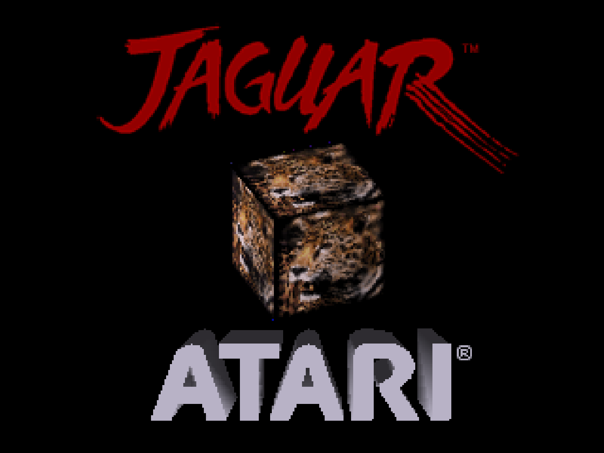
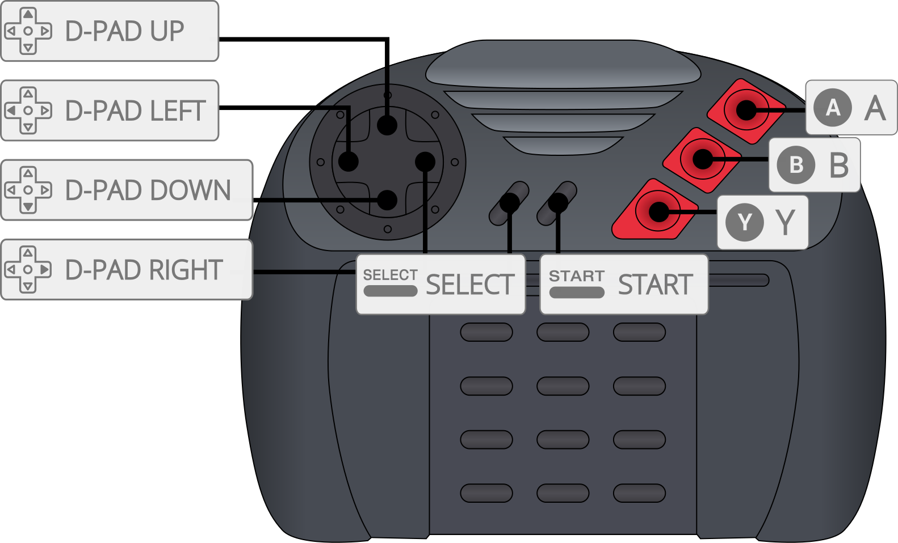

Atari - Jaguar (Virtual Jaguar)¶
Background¶
Virtual Jaguar is the actively maintained Atari Jaguar and Jaguar CD emulator for libretro, continuing the Virtual Jaguar project (originally by David Raingeard of Potato Emulation).
No BIOS files are required: the Jaguar boot ROM and CD BIOS images are embedded in the core. The core supports Jaguar CD (CUE/BIN, CDI) with Memory Track saves and audio-CD / Virtual Light Machine playback, the Jaguar GameDrive (JagGD) flash cartridge, JagLink/CatBox network play over TCP or RetroArch netplay, a high-level BIOS that lets most commercial titles boot without a real BIOS image, save states, SRAM, cheat codes and RetroAchievements. Enhancement options include M68K/RISC clock scaling (overclock) for framerate-limited games, full-precision 'True Color' gouraud shading, and 2x internal resolution. The accurate blitter is SIMD-accelerated (SSE2 on x86, NEON on ARM); the Blitter core option can be set to 'Fast' to trade some accuracy for additional speed on lower-end hardware.
Author/License¶
The Virtual Jaguar core has been authored by
- Joseph Mattiello
- David Raingeard
- Shamus
The Virtual Jaguar core is licensed under
A summary of the licenses behind RetroArch and its cores can be found here.
Extensions¶
Content that can be loaded by the Virtual Jaguar core have the following file extensions:
- .j64
- .jag
- .rom
- .abs
- .cof
- .bin
- .prg
- .cue (Jaguar CD)
- .cdi (Jaguar CD)
Attention
Bare .iso images are refused at load time. A 2048-byte-sector ISO cannot represent a Jaguar CD's multi-session layout (session 1 audio warning track, session 2 data recorded as byte-swapped 2352-byte audio-type sectors, track lead-in offsets), so no retail disc can boot from one. Use CUE/BIN or CDI instead.
Databases¶
RetroArch database(s) that are associated with the Virtual Jaguar core:
BIOS¶
No BIOS files are required. The Jaguar console boot ROM and both Jaguar CD BIOS images are compiled into the core.
The files below are optional overrides for the Jaguar CD real-BIOS boot path only. If present in the frontend's system directory they are preferred over the embedded copies, and the 'CD BIOS Type' core option picks which one wins when both are present.
| Filename | Description | md5sum |
|---|---|---|
[BIOS] Atari Jaguar CD (World).j64 |
Jaguar CD BIOS, retail - optional override | 77cd95c7ad06a39f4c59995094aa10f9 |
[BIOS] Atari Jaguar Developer CD (World).j64 |
Jaguar CD BIOS, developer - optional override | 578de34498cb9a40c5368b6f5ca80484 |
The CD BIOS is also searched for under several other common filenames, and inside Atari - Jaguar, Atari - Jaguar CD, jaguar and jaguarcd sub-folders of the system directory.
Attention
The Jaguar console boot ROM is never loaded from the system directory — the 'BIOS (Cartridges)' core option selects between the core's HLE BIOS and the embedded boot ROM. There is no cartridge BIOS file to supply.
Features¶
Frontend-level settings or features that the Virtual Jaguar core respects.
| Feature | Supported |
|---|---|
| Restart | ✔ |
| Screenshots | ✔ |
| Saves | ✔ |
| States | ✔ |
| Rewind | ✔ |
| Netplay | ✔ |
| Core Options | ✔ |
| Memory Monitoring (achievements) | ✔ |
| RetroArch Cheats | ✔ |
| Native Cheats | ✔ |
| Controls | ✔ |
| Remapping | ✔ |
| Multi-Mouse | ✕ |
| Rumble | ✕ |
| Sensors | ✕ |
| Camera | ✕ |
| Location | ✕ |
| Subsystem | ✕ |
| Softpatching | ✔ |
| Disk Control | ✕ |
| Username | ✕ |
| Language | ✕ |
| Crop Overscan | ✕ |
| LEDs | ✕ |
Attention
The core reports its save states with no serialization quirks, which is what enables rewind and netplay.
Directories¶
The Virtual Jaguar core's internal core name is 'Virtual Jaguar'
The Virtual Jaguar core saves/loads to/from these directories.
Frontend's Save directory
| File | Description |
|---|---|
| *.srm | Cartridge EEPROM, CD EEPROM and Memory Track NVRAM save data |
Note: All non-volatile save data goes into a single frontend-managed .srm. Cartridge content stores the cartridge and CD EEPROM banks (128 bytes each); CD content additionally stores the 128 KB Memory Track NVRAM after them.
Frontend's System directory
| File | Description |
|---|---|
| Jaguar CD BIOS images | Optional - see BIOS |
| vj_netlink.txt | Optional - network link host address on the first line, used when the 'Network Link Host' core option is set to 'From file' |
Geometry and timing¶
- The Virtual Jaguar core's core provided FPS is 50 for PAL games and 60 for NTSC games.
- The Virtual Jaguar core's core provided sample rate is 48000 Hz
- The Virtual Jaguar core's core provided aspect ratio is 4/3
Core options¶
The Virtual Jaguar core has the following option(s) that can be tweaked from the core options menu. The default setting is bolded.
Settings with (Restart) means that core has to be closed for the new setting to be applied on next launch.
Options are grouped into categories, and options that do not apply to the loaded content type are hidden — the CD-ROM options do not appear when a cartridge is loaded, and vice versa.
Video¶
-
Blitter [virtualjaguar_usefastblitter] (Accurate|Fast)
Choose which blitter implementation to use. 'Accurate' is SIMD-accelerated (SSE2 on x86, NEON on ARM) and is the most compatible. 'Fast' is the older blitter; it trades accuracy for extra speed on low-end hardware and breaks some games.
-
True Color (Gouraud Precision) [virtualjaguar_true_color] (disabled|enabled)
Render gouraud-shaded pixels at full precision (chroma x 24-bit intensity) to reduce banding in 3D games. The game-visible 16-bit framebuffer is unchanged. Applies to CRY 16bpp video modes only.
-
Internal Resolution (Restart Required) [virtualjaguar_internal_resolution] (1x (native)|2x)
Render internally at a multiple of the Jaguar's native resolution. Applied when content is loaded; changing it mid-game takes effect on restart. Presentation only: the game-visible framebuffer and all emulation timing are unchanged. Combines with True Color.
-
Widescreen (Stretch to 16:9) [virtualjaguar_widescreen] (disabled|enabled)
Report a 16:9 aspect ratio to the frontend instead of the Jaguar's native 4:3, for a cosmetic horizontal stretch -- the console has no wider display mode. Presentation only: the emulated framebuffer is identical either way. Off by default.
-
Per-Title Enhancement Defaults [virtualjaguar_pertitle_defaults] (enabled|disabled)
Apply known-safe enhancement presets automatically for recognized games (e.g. internal resolution or true color where a title is verified to benefit). A preset only applies to options you left at their default value; anything you set yourself always wins. Disable for stock behaviour on every title.
-
Per-Title Enhancement Hooks [virtualjaguar_enhancement_hooks] (disabled|enabled)
Apply per-game byte patches from the enhancement database to the loaded cartridge image (game-side fixes that no core option can express). Off by default. Each patch verifies the bytes it expects and writes nothing if they differ, so it cannot corrupt a dump it was not written for. Cartridge content only; takes effect on restart.
-
Texture Replacement [virtualjaguar_texture_replace] (disabled|enabled)
Present community texture-pack art in place of the title's own blitter tiles. Packs live in
/vj_texpacks/ /, named by the same hashes Texture Dump Mode writes. Presentation only: the emulated machine, save states and netplay are bit-identical with or without a pack. Shown only when a pack directory exists for the loaded title. -
PAL (Restart) [virtualjaguar_pal] (disabled|enabled)
Emulate a PAL Jaguar instead of NTSC.
BIOS & Boot¶
-
BIOS (Cartridges) [virtualjaguar_bios] (HLE|Real)
Which BIOS a CARTRIDGE boots with. 'HLE' has the core emulate the BIOS setup and services itself: most commercial titles boot faster and the boot animation is skipped. 'Real' runs the actual Jaguar boot ROM, which some titles require. Both boot ROM images are built into the core, so neither setting needs a file. GPU-only/jagcrypt carts (BootIntro demos) turn the real boot ROM on even when this is set to HLE -- they contain no 68K program for HLE to start. Ignored for CD content: 'CD Boot Mode' decides there.
BIOS (Cartridges) - Real

-
Cart BIOS Type (Restart) [virtualjaguar_bios_type] (Series K|Model M|Custom (external file))
Which console boot ROM a CARTRIDGE uses when 'BIOS (Cartridges)' is Real, or when a GPU-only/jagcrypt cart turns the boot ROM on. 'Series K' is the original Jaguar; 'Model M' is the later revision (patch address $4804) most size-coded BootIntros are built for. Both are built into the core. 'Custom' loads a 128 KB image from the system directory (jagboot.rom, boot.rom, boot0.rom, or a named '[BIOS] Atari Jaguar...' file), identified by checksum and logged, falling back to Series K if none is found. A jagboot_m.rom in the system directory replaces the built-in Model M image. Ignored for CD content.
-
Jaguar GameDrive (Restart) [virtualjaguar_jgd] (Auto (images over 6 MB)|disabled|Enabled (force, for GD-locked images))
Emulate the Jaguar GameDrive (JagGD) flash cartridge: its detection/install interface and 1 MB bank switching over up to 16 MB of cart SDRAM. 'Auto' turns it on only for ROM images larger than the 6 MB cartridge window. 'Enabled' forces it on for smaller images too, for GD-locked homebrew that refuses to boot without the cart (BigPEmu calls this Force JGD). Without it, GD-locked titles hang at boot exactly as on a stock console.
CD-ROM¶
-
CD BIOS Type (Restart) [virtualjaguar_cd_bios_type] (Retail|Developer)
Which CD BIOS the real-BIOS boot path uses. 'Retail' is the standard consumer BIOS; 'Developer' is the dev-kit BIOS, which applies less strict disc checks and can boot images the retail BIOS refuses. Both are built into the core, so no files are required; a CD BIOS ROM file in the system directory is preferred over the built-in image, and this setting picks which file wins when both types are present. Only has an effect when 'CD Boot Mode' is 'Real BIOS' or 'Auto' -- the HLE boot path never runs a CD BIOS.
-
CD Boot Mode (Restart) [virtualjaguar_cd_boot_mode] (HLE (Recommended)|Auto (Real BIOS)|Real BIOS (Included))
How Jaguar CD discs boot. OVERRIDES the 'BIOS (Cartridges)' setting for CD content. 'HLE' emulates the CD BIOS services directly with the console boot ROM off -- fastest and the most broadly compatible. 'Real BIOS' runs an actual CD BIOS with the boot ROM on: more faithful, and verified clean across all 5 tested FMV titles (Dragon's Lair, Space Ace, BrainDead 13, Blue Lightning, Highlander) in 15,000-frame probes. It prefers a CD BIOS ROM file from the system directory (several common names and the usual Jaguar / Jaguar CD sub-folders are searched) and otherwise uses the built-in image chosen by 'CD BIOS Type', so no files are required. 'Auto' is currently identical to 'Real BIOS'. If no CD BIOS can be staged at all, the core falls back to HLE rather than failing. Audio-only (Red Book) CDs always use the real BIOS regardless of this setting, since HLE has no game code to boot from.
-
CD Read Speed (HLE Boot Mode Only) [virtualjaguar_cd_read_speed] (1x (150 KB/s)|2x (Accurate)|4x|8x|Instant)
Data-transfer rate for Jaguar CD reads in HLE boot mode. '2x' matches the real drive (300 KB/s) and is hardware-accurate. Higher speeds shorten load times but may break titles that pace code overlays, music cues or load handshakes off the drive rate; 'Instant' completes each read in one tick and is the most likely to hang. Real-BIOS boot always uses the accurate rate. Applied per read: a transfer already in flight keeps the speed it started with.
-
Memory Track (Restart) [virtualjaguar_memory_track] (enabled|disabled)
Emulate the Memory Track save cartridge alongside the CD unit, as on real hardware. CD games detect it and save settings, progress and high scores to its 128 KB NVRAM (stored in the save file). Disable to emulate a console without the cartridge -- games will warn that game information cannot be saved.
Network Link¶
-
Network Link [virtualjaguar_netlink] (Automatic (use netplay when available)|Off|Loopback (echo to self)|TCP Host (listen)|TCP Client (connect))
How this console's serial port reaches another player. 'Automatic' uses your frontend's netplay session when one is running -- nothing to configure -- and otherwise stays idle. 'TCP Host'/'TCP Client' link two emulators directly without netplay; the client picks a host below, and LAN hosts are found automatically. 'Loopback' echoes back to this console, for testing link-detect menus with no partner.
-
Network Link Device [virtualjaguar_uart_device] (JagLink / CatBox (raw cable)|Voice Modem (Ultra Vortek))
What is plugged into the serial port. 'JagLink / CatBox' is the raw cable used by BattleSphere, AirCars and Doom. 'Voice Modem' emulates the Jaguar Voice Modem for Ultra Vortek's phone-line versus mode: type 911 on the numpad at the title screen, then one player dials any number and the other answers -- the call rides the Network Link transport selected above.
-
Network Link Host (TCP Client) [virtualjaguar_netlink_host] (127.0.0.1 (localhost)|jaghub.local (host machine named 'jaghub' on the LAN)|From file (vj_netlink.txt in system dir))
Which host to connect to. Hosts running on your LAN appear here automatically within a couple of seconds. 'From file' reads
/vj_netlink.txt: one line, the address only, no port -- for example '192.168.1.42' or 'myhost.local'. The port comes from 'Network Link Port'. The VJ_NETLINK_HOST environment variable overrides this option. -
Network Link Port [virtualjaguar_netlink_port] (42171|42172|42173|42174)
TCP port for the network link (both sides must match). Overridable with the VJ_NETLINK_PORT environment variable.
-
Network Link Latency Hiding [virtualjaguar_netlink_wait] (enabled|disabled)
Briefly holds each frame until the link partner's reply arrives, so network latency doesn't round every link exchange up to whole video frames. The wait adapts automatically to the measured connection (a few ms on localhost, more on Wi-Fi) and is capped so audio/video pacing survives. Disable only for troubleshooting or benchmarking.
-
Network Link Wire Speed (Enhancement) [virtualjaguar_netlink_speed] (Off (authentic hardware timing)|Auto (negotiated with peer))
Clocks the emulated serial port faster than real hardware, so a link game's lockstep exchange finishes inside one video frame instead of spilling into the next -- at authentic speed (Ultra Vortek's Voice Modem mode settles at 19200 baud, about 5.8 ms of wire time each way per frame) you do not see your own move until the round trip completes. A real Voice Modem or JagLink cable is exactly that slow, which is why this stays an opt-out enhancement rather than a fix. 'Auto' (the default) has the two consoles agree the speed-up between themselves at link-up: nothing to match by hand, and if the peer runs an older core, is not in Auto, or never answers, this side quietly stays at authentic timing instead of running ahead alone. Only takes effect over a direct Network Link (TCP host/client): frontend netplay has no channel for the two cores to negotiate over and always runs authentic timing. If a game starts dropping link data, turn this off.
-
Voice Chat (Host-Side) [virtualjaguar_voice_chat] (disabled|enabled)
Opt-in voice channel over the Network Link -- the Jaguar Voice Modem's real selling point of simultaneous voice and data. NOT emulation: voice never entered the Jaguar, which only issued audio-path control words. Capture uses the frontend microphone API where available. Off by default so mic capture never starts unasked. Works over TCP Host/Client and over RetroArch netplay when both sides enable the option (auto-negotiated; falls back to data-only if the peer never confirms).
-
Voice Chat Transmit Gate [virtualjaguar_voice_chat_gate] (Open mic (VAD)|Push to talk (keyboard))
'Open mic' transmits whenever the mic energy exceeds the VAD threshold (works on every frontend including mobile). 'Push to talk' transmits only while the configured keyboard key is held (desktop-oriented -- no RetroPad button is free).
-
Voice Chat Push-to-Talk Key [virtualjaguar_voice_chat_ptt_key] (V|C|Space|Tab|Left Ctrl|Backquote (`))
Keyboard key that opens the mic in Push-to-talk mode. Keys already claimed by the Jaguar keypad mapping are omitted.
-
Voice Chat Volume [virtualjaguar_voice_chat_volume] (25%|50%|75%|100%)
Far-end (and optional local monitor) mix level into the game audio. Kept conservative by default so voice does not clip the DAC mix.
-
Voice Chat VAD Threshold [virtualjaguar_voice_chat_vad] (Low (200)|Medium (400)|High (800)|Very high (1600))
Absolute-average energy gate for Open-mic mode. Raise if background noise keys the mic; lower if soft speech is cut off.
-
Voice Chat Local Monitor [virtualjaguar_voice_chat_monitor] (disabled|enabled)
Mix your own mic into the local audio output for a mic check. Does not change what is sent to the peer.
Input¶
-
Enable Core Options Remapping [virtualjaguar_alt_inputs] (disabled|enabled)
Enabling this option will let you rebind controllers from the core options, removing the 'Controls' menu limitation that makes Numpad 7, 8, 9, * and # impossible to remap. NOTE: the 'Controls' menu can still conflict with the core options remapping, if you're using a remap file it is recommended to delete/reset it.
-
Rotary Sensitivity [virtualjaguar_rotary_sensitivity] (25%|50%|75%|100%|150%|200%|300%|400%)
Scales spinner movement before it is converted to quadrature pulses. The emulated encoder can only emit one pulse per controller poll of its row, so raising this past what the game's poll rate can carry adds lag rather than speed.
-
Rotary Reports Controller Type [virtualjaguar_rotary_id] (Standard Joypad (no diode -- as most real units)|Tempest Rotary (diode fitted))
Whether an emulated rotary identifies itself to software as a rotary (diode D23 fitted). Most rotary controllers ever built shipped without the diode and identify as a standard joypad, which is the default here. Tempest 2000 does not read this -- it uses its own CONTROLLER TYPE menu instead.
-
Rotary Dead Zone [virtualjaguar_rotary_deadzone] (Off|1 unit|2 units|3 units|4 units|6 units|8 units)
Discards spinner movement at or below this many host units per poll. A noise gate for a jittery source; movement above the threshold passes at full size.
-
Rotary Offset [virtualjaguar_rotary_offset] (-4|-3|-2|-1|Off|+1|+2|+3|+4)
Subtracts a constant from every spinner sample. Cancels a source that reports a small non-zero movement while at rest, which would otherwise spin the knob forever with the controls untouched. Applied in host orientation, before the wheel's direction convention.
-
Rotary Response Curve [virtualjaguar_rotary_exponent] (Linear (1.00)|1.25|1.50|1.75|2.00|2.50|3.00)
Response exponent for the spinner, giving finer control at low speed. The curve is anchored at 64 units per poll: below that an exponent above 1.00 attenuates, at and above it movement passes through unchanged. A higher exponent therefore makes the spinner SLOWER overall -- raise Rotary Sensitivity to get the top speed back.
-
Analog Controller Dead Zone (X) [virtualjaguar_analog_deadzone_x] (Off|4 counts (~3%)|8 counts (~6%)|12 counts (~9%)|16 counts (~13%)|24 counts (~19%)|32 counts (~25%))
Stick positions within this many ADC counts of centre (127 = full deflection) read as exactly centred. The rest of the travel is rescaled so the response is smooth at the edge and full deflection still reads full scale.
-
Analog Controller Dead Zone (Y) [virtualjaguar_analog_deadzone_y] (Off|4 counts (~3%)|8 counts (~6%)|12 counts (~9%)|16 counts (~13%)|24 counts (~19%)|32 counts (~25%))
As Analog Controller Dead Zone (X), for the Y axis (pitch, or accelerator/brake on the driving controller).
-
Analog Controller Offset (X) [virtualjaguar_analog_offset_x] (-16|-8|-4|-2|Off|+2|+4|+8|+16)
Subtracts a constant (in ADC counts) from every X sample, in host orientation before any device convention. Cancels a stick that rests off-centre; a centred stick is moved by it, which is the point.
-
Analog Controller Offset (Y) [virtualjaguar_analog_offset_y] (-16|-8|-4|-2|Off|+2|+4|+8|+16)
As Analog Controller Offset (X), for the Y axis.
-
Analog Controller Response Curve (X) [virtualjaguar_analog_exponent_x] (Linear (1.00)|1.25|1.50|1.75|2.00|2.50|3.00)
Response exponent for the X axis, anchored at full deflection: an exponent above 1.00 gives finer control near centre while full deflection still reads full scale. Unlike the mouse/rotary curves this costs no top speed, so there is no paired sensitivity control.
-
Analog Controller Response Curve (Y) [virtualjaguar_analog_exponent_y] (Linear (1.00)|1.25|1.50|1.75|2.00|2.50|3.00)
As Analog Controller Response Curve (X), for the Y axis.
Input Port 1¶
-
Port 1 > Controller Type [virtualjaguar_p1_device] (Auto (per-title default)|Standard Joypad|Team Tap (4-player adaptor)|Pro Controller (6-button)|Rotary (Tempest)|Light Gun|Analog Joystick (bank-switching)|Driving Controller (bank-switching)|Analog Stick (paddle ADC)|6D Controller (bank-switching))
Which peripheral is plugged into controller port 1. '6D Controller' is Atari's unreleased six-degrees-of-freedom controller from the Technical Reference V10 -- three translations and three rotations, seven buttons and a Rezero control, over three banks. NO SOFTWARE ANYWHERE READS IT: the device was never shipped and this is a best attempt from the manual alone, unvalidated against any real program. Left stick translates left/right and up/down, right stick yaws and pitches, the L2/R2 triggers are fore/aft thrust and the L/R shoulders roll; A/B/C/D are the usual four face buttons, E/F are the stick clicks, and G/Rezero are Start/Select. Like the other bank-switching types the port stays a RetroPad until an axis actually moves. Note the real controller has NO Pause and NO Option button -- on hardware those come from a joypad plugged into the controller's own passthrough, which has no emulated equivalent, so both are unreachable while it is engaged. If you try this, please report what you find on the issue tracker. 'Pro Controller' is the retail six-button pad: its X/Y/Z fire buttons and Left/Right shoulder buttons alias onto keypad 9/8/7/4/6 (Atari's own SDK header and developer newsletter, docs/teamtap-procontroller-spike.md section 9 -- the TR10 manual never mentions the device, because there is nothing new for it to document). Selecting this only changes which five RetroPad buttons update those five keypad slots; the port is still an ordinary RetroPad otherwise. Because the aliasing is real hardware behaviour, a title that reads its own keypad -- weapon select, level codes, menu shortcuts -- sees genuine keypad presses from X/Y/Z/L1/R1 while this is selected, so leave it on 'Standard Joypad' unless a game specifically wants the Pro Controller. No detection method was ever published, so no title can be confirmed to require it; see docs/input-devices-user-guide.md. 'Team Tap (4-player adaptor)' is Atari's four-socket adapter: the pad you already use on this port stays as socket 0, and three more pads appear on RetroArch ports 3, 4 and 5 -- so with one Team Tap on port 1 your four players are on RetroArch ports 1, 3, 4 and 5. Everything behind the adapter is an ordinary Jaguar joypad -- the adapter rewrites the row codes so the pads never know it is there -- and titles detect it by reading socket 3, which is the one bit this adds. Known retail support is two titles: White Men Can't Jump, which needs it for 3 and 4 player games, and NBA Jam T.E., where it is optional; homebrew support is unestablished. It is inert for every other title, so leave it off unless you are playing one. Per-port button remapping and 'Numpad to Keyboard' apply to socket 0 only, so remap the extra pads from RetroArch's own Controls menu. 'Rotary (Tempest)' is the Tempest spinner: it removes Up and Down and reports wheel rotation on Left/Right instead, and is driven by relative mouse X. Its buttons (A, B, C, Option, Pause and the keypad) stay on the RetroPad, which is what a real rotary has. 'Light Gun' is the port-1 light gun: the Jaguar wires its LP pin to port 1 only, so it is not offered on port 2. Aim with whatever your frontend maps to the light gun (mouse or Wiimote); the trigger reports as the Jaguar's B button, which is what Balloons reads, and Aux A / Aux B / Start / Select reach A / C / Option / Pause. Aiming off-screen stops the aim updating, exactly as a real gun stops seeing the beam. 'Analog Joystick' and 'Driving Controller' are Atari's bank-switching analog device (one protocol, two skins) -- NO RELEASED TITLE reads it, so these exist for homebrew. Driven by the left analog stick (the driving skin also takes the L2/R2 triggers as brake/accelerator); the port stays a RetroPad until the stick actually moves, so a game that probes controller types at boot only sees the analog device if the stick is deflected first. 'Analog Stick (paddle ADC)' is a DIFFERENT device: the 8-bit converter fitted to early Jaguar motherboards, which production consoles do not have. It is the one analog interface a released game reads, though the known consumer (BattleSphere) uses port 2 for it. Driven by the left analog stick, and unlike the bank-switching types it leaves the RetroPad fully connected, because the stick's potentiometers are separate pins from the buttons. Leave it off unless a game asks for it: with no paddle selected the emulated console reports no converter fitted, exactly as real hardware does. There is no per-title default for any of these and there never will be -- selecting a rotary removes Up and Down and a gun repurposes B, so either would break the controls of anyone using a pad. Tempest 2000 hides its rotary support behind an unlock -- from SELECT GAME TYPE TO PLAY press Option on controller 1, then press Pause on BOTH controllers at once to reveal CONTROLLER TYPE. The unlock is saved to the game's EEPROM, so it is only needed once.
-
Port 1 > Numpad Buttons to Keyboard Keys [virtualjaguar_p1_numpad_to_kb] (disabled|Number Row Keys|Keypad Keys)
Map Jaguar numpad 0-9, * and # to keyboard keys. 'Number Row Keys' will use 1234567890-= keys, 'Keypad Keys' will use 0123456789/* keypad keys.
-
Port 1 > RetroPad Up [virtualjaguar_p1_retropad_up] (Up|Down|Left|Right|A|B|C|Pause|Option|Numpad 0|Numpad 1|Numpad 2|Numpad 3|Numpad 4|Numpad 5|Numpad 6|Numpad 7|Numpad 8|Numpad 9|Numpad *|Numpad #|---)
-
Port 1 > RetroPad Down [virtualjaguar_p1_retropad_down] (Up|Down|Left|Right|A|B|C|Pause|Option|Numpad 0|Numpad 1|Numpad 2|Numpad 3|Numpad 4|Numpad 5|Numpad 6|Numpad 7|Numpad 8|Numpad 9|Numpad *|Numpad #|---)
-
Port 1 > RetroPad Left [virtualjaguar_p1_retropad_left] (Up|Down|Left|Right|A|B|C|Pause|Option|Numpad 0|Numpad 1|Numpad 2|Numpad 3|Numpad 4|Numpad 5|Numpad 6|Numpad 7|Numpad 8|Numpad 9|Numpad *|Numpad #|---)
-
Port 1 > RetroPad Right [virtualjaguar_p1_retropad_right] (Up|Down|Left|Right|A|B|C|Pause|Option|Numpad 0|Numpad 1|Numpad 2|Numpad 3|Numpad 4|Numpad 5|Numpad 6|Numpad 7|Numpad 8|Numpad 9|Numpad *|Numpad #|---)
-
Port 1 > RetroPad A [virtualjaguar_p1_retropad_a] (Up|Down|Left|Right|A|B|C|Pause|Option|Numpad 0|Numpad 1|Numpad 2|Numpad 3|Numpad 4|Numpad 5|Numpad 6|Numpad 7|Numpad 8|Numpad 9|Numpad *|Numpad #|---)
-
Port 1 > RetroPad B [virtualjaguar_p1_retropad_b] (Up|Down|Left|Right|A|B|C|Pause|Option|Numpad 0|Numpad 1|Numpad 2|Numpad 3|Numpad 4|Numpad 5|Numpad 6|Numpad 7|Numpad 8|Numpad 9|Numpad *|Numpad #|---)
-
Port 1 > RetroPad X [virtualjaguar_p1_retropad_x] (Up|Down|Left|Right|A|B|C|Pause|Option|Numpad 0|Numpad 1|Numpad 2|Numpad 3|Numpad 4|Numpad 5|Numpad 6|Numpad 7|Numpad 8|Numpad 9|Numpad *|Numpad #|---)
-
Port 1 > RetroPad Y [virtualjaguar_p1_retropad_y] (Up|Down|Left|Right|A|B|C|Pause|Option|Numpad 0|Numpad 1|Numpad 2|Numpad 3|Numpad 4|Numpad 5|Numpad 6|Numpad 7|Numpad 8|Numpad 9|Numpad *|Numpad #|---)
-
Port 1 > RetroPad Select [virtualjaguar_p1_retropad_select] (Up|Down|Left|Right|A|B|C|Pause|Option|Numpad 0|Numpad 1|Numpad 2|Numpad 3|Numpad 4|Numpad 5|Numpad 6|Numpad 7|Numpad 8|Numpad 9|Numpad *|Numpad #|---)
-
Port 1 > RetroPad Start [virtualjaguar_p1_retropad_start] (Up|Down|Left|Right|A|B|C|Pause|Option|Numpad 0|Numpad 1|Numpad 2|Numpad 3|Numpad 4|Numpad 5|Numpad 6|Numpad 7|Numpad 8|Numpad 9|Numpad *|Numpad #|---)
-
Port 1 > RetroPad L1 [virtualjaguar_p1_retropad_l1] (Up|Down|Left|Right|A|B|C|Pause|Option|Numpad 0|Numpad 1|Numpad 2|Numpad 3|Numpad 4|Numpad 5|Numpad 6|Numpad 7|Numpad 8|Numpad 9|Numpad *|Numpad #|---)
-
Port 1 > RetroPad R1 [virtualjaguar_p1_retropad_r1] (Up|Down|Left|Right|A|B|C|Pause|Option|Numpad 0|Numpad 1|Numpad 2|Numpad 3|Numpad 4|Numpad 5|Numpad 6|Numpad 7|Numpad 8|Numpad 9|Numpad *|Numpad #|---)
-
Port 1 > RetroPad L2 [virtualjaguar_p1_retropad_l2] (Up|Down|Left|Right|A|B|C|Pause|Option|Numpad 0|Numpad 1|Numpad 2|Numpad 3|Numpad 4|Numpad 5|Numpad 6|Numpad 7|Numpad 8|Numpad 9|Numpad *|Numpad #|---)
-
Port 1 > RetroPad R2 [virtualjaguar_p1_retropad_r2] (Up|Down|Left|Right|A|B|C|Pause|Option|Numpad 0|Numpad 1|Numpad 2|Numpad 3|Numpad 4|Numpad 5|Numpad 6|Numpad 7|Numpad 8|Numpad 9|Numpad *|Numpad #|---)
-
Port 1 > RetroPad L3 [virtualjaguar_p1_retropad_l3] (Up|Down|Left|Right|A|B|C|Pause|Option|Numpad 0|Numpad 1|Numpad 2|Numpad 3|Numpad 4|Numpad 5|Numpad 6|Numpad 7|Numpad 8|Numpad 9|Numpad *|Numpad #|---)
-
Port 1 > RetroPad R3 [virtualjaguar_p1_retropad_r3] (Up|Down|Left|Right|A|B|C|Pause|Option|Numpad 0|Numpad 1|Numpad 2|Numpad 3|Numpad 4|Numpad 5|Numpad 6|Numpad 7|Numpad 8|Numpad 9|Numpad *|Numpad #|---)
-
Port 1 > RetroPad Left Analog Up [virtualjaguar_p1_retropad_analog_lu] (Up|Down|Left|Right|A|B|C|Pause|Option|Numpad 0|Numpad 1|Numpad 2|Numpad 3|Numpad 4|Numpad 5|Numpad 6|Numpad 7|Numpad 8|Numpad 9|Numpad |Numpad #|*---**)
-
Port 1 > RetroPad Left Analog Down [virtualjaguar_p1_retropad_analog_ld] (Up|Down|Left|Right|A|B|C|Pause|Option|Numpad 0|Numpad 1|Numpad 2|Numpad 3|Numpad 4|Numpad 5|Numpad 6|Numpad 7|Numpad 8|Numpad 9|Numpad |Numpad #|*---**)
-
Port 1 > RetroPad Left Analog Left [virtualjaguar_p1_retropad_analog_ll] (Up|Down|Left|Right|A|B|C|Pause|Option|Numpad 0|Numpad 1|Numpad 2|Numpad 3|Numpad 4|Numpad 5|Numpad 6|Numpad 7|Numpad 8|Numpad 9|Numpad |Numpad #|*---**)
-
Port 1 > RetroPad Left Analog Right [virtualjaguar_p1_retropad_analog_lr] (Up|Down|Left|Right|A|B|C|Pause|Option|Numpad 0|Numpad 1|Numpad 2|Numpad 3|Numpad 4|Numpad 5|Numpad 6|Numpad 7|Numpad 8|Numpad 9|Numpad |Numpad #|*---**)
-
Port 1 > RetroPad Right Analog Up [virtualjaguar_p1_retropad_analog_ru] (Up|Down|Left|Right|A|B|C|Pause|Option|Numpad 0|Numpad 1|Numpad 2|Numpad 3|Numpad 4|Numpad 5|Numpad 6|Numpad 7|Numpad 8|Numpad 9|Numpad |Numpad #|*---**)
-
Port 1 > RetroPad Right Analog Down [virtualjaguar_p1_retropad_analog_rd] (Up|Down|Left|Right|A|B|C|Pause|Option|Numpad 0|Numpad 1|Numpad 2|Numpad 3|Numpad 4|Numpad 5|Numpad 6|Numpad 7|Numpad 8|Numpad 9|Numpad |Numpad #|*---**)
-
Port 1 > RetroPad Right Analog Left [virtualjaguar_p1_retropad_analog_rl] (Up|Down|Left|Right|A|B|C|Pause|Option|Numpad 0|Numpad 1|Numpad 2|Numpad 3|Numpad 4|Numpad 5|Numpad 6|Numpad 7|Numpad 8|Numpad 9|Numpad |Numpad #|*---**)
-
Port 1 > RetroPad Right Analog Right [virtualjaguar_p1_retropad_analog_rr] (Up|Down|Left|Right|A|B|C|Pause|Option|Numpad 0|Numpad 1|Numpad 2|Numpad 3|Numpad 4|Numpad 5|Numpad 6|Numpad 7|Numpad 8|Numpad 9|Numpad |Numpad #|*---**)
Input Port 2¶
-
Port 2 > Controller Type [virtualjaguar_p2_device] (Auto (per-title default)|Standard Joypad|Team Tap (4-player adaptor)|Pro Controller (6-button)|Atari ST / PS2 Mouse|Amiga Mouse (ST adapter)|Amiga Mouse (Amiga adapter)|Rotary (Tempest)|Analog Joystick (bank-switching)|Driving Controller (bank-switching)|Analog Stick (paddle ADC)|6D Controller (bank-switching))
Which peripheral is plugged into controller port 2. '6D Controller' is Atari's unreleased six-degrees-of-freedom controller from the Technical Reference V10 -- three translations and three rotations, seven buttons and a Rezero control, over three banks. NO SOFTWARE ANYWHERE READS IT: the device was never shipped and this is a best attempt from the manual alone, unvalidated against any real program. Left stick translates left/right and up/down, right stick yaws and pitches, the L2/R2 triggers are fore/aft thrust and the L/R shoulders roll; A/B/C/D are the usual four face buttons, E/F are the stick clicks, and G/Rezero are Start/Select. Like the other bank-switching types the port stays a RetroPad until an axis actually moves. Note the real controller has NO Pause and NO Option button -- on hardware those come from a joypad plugged into the controller's own passthrough, which has no emulated equivalent, so both are unreachable while it is engaged. If you try this, please report what you find on the issue tracker. 'Pro Controller' is the retail six-button pad: its X/Y/Z fire buttons and Left/Right shoulder buttons alias onto keypad 9/8/7/4/6 (Atari's own SDK header and developer newsletter, docs/teamtap-procontroller-spike.md section 9 -- the TR10 manual never mentions the device, because there is nothing new for it to document). Selecting this only changes which five RetroPad buttons update those five keypad slots; the port is still an ordinary RetroPad otherwise. Because the aliasing is real hardware behaviour, a title that reads its own keypad -- weapon select, level codes, menu shortcuts -- sees genuine keypad presses from X/Y/Z/L1/R1 while this is selected, so leave it on 'Standard Joypad' unless a game specifically wants the Pro Controller. No detection method was ever published, so no title can be confirmed to require it; see docs/input-devices-user-guide.md. 'Team Tap (4-player adaptor)' is Atari's four-socket adapter: the pad you already use on this port stays as socket 0, and three more pads appear on RetroArch ports 6, 7 and 8. Everything behind the adapter is an ordinary Jaguar joypad -- the adapter rewrites the row codes so the pads never know it is there -- and titles detect it by reading socket 3, which is the one bit this adds. Known retail support is two titles: White Men Can't Jump, which needs it for 3 and 4 player games, and NBA Jam T.E., where it is optional; homebrew support is unestablished. It is inert for every other title, so leave it off unless you are playing one. Per-port button remapping and 'Numpad to Keyboard' apply to socket 0 only, so remap the extra pads from RetroArch's own Controls menu. 'Atari ST / PS2 Mouse' is the wiring used by the AtariAge and Brewing Academy ST adapters and by PS/2 mouse adapters. 'Amiga Mouse (ST adapter)' is an Amiga mouse plugged into an ST-wired adapter -- this is what an in-game 'Atari / Amiga' selector normally chooses between. 'Amiga Mouse (Amiga adapter)' is the rarer dedicated adapter. A mouse asserts its state in every row scan, exactly as the real row-blind adapter does, so the port-2 RetroPad is disconnected while one is selected. 'Rotary (Tempest)' is the Tempest spinner: it removes Up and Down and reports wheel rotation on Left/Right instead, and is driven by relative mouse X. Its buttons stay on the RetroPad. Tempest 2000 hides its rotary support behind an unlock -- from SELECT GAME TYPE TO PLAY press Option on controller 1, then press Pause on BOTH controllers at once to reveal CONTROLLER TYPE. The unlock is saved to the game's EEPROM, so it is only needed once. 'Analog Joystick' and 'Driving Controller' are Atari's bank-switching analog device (one protocol, two skins) -- NO RELEASED TITLE reads it, so these exist for homebrew. Driven by the left analog stick (the driving skin also takes the L2/R2 triggers as brake/accelerator); the port stays a RetroPad until the stick actually moves, so a game that probes controller types at boot only sees the analog device if the stick is deflected first. 'Analog Stick (paddle ADC)' is a DIFFERENT device: the 8-bit converter fitted to early Jaguar motherboards, which production consoles do not have. It is the one analog interface a released game reads -- BattleSphere and BattleSphere Gold, which also need their own Gameplay Options > 2nd Controller set to Analog Stick. Driven by the left analog stick, and unlike the bank-switching types it leaves the RetroPad fully connected, because the stick's potentiometers are separate pins from the buttons. Leave it off unless a game asks for it: with no paddle selected the emulated console reports no converter fitted, exactly as real hardware does.
-
Port 2 > Mouse Sensitivity [virtualjaguar_mouse_sensitivity] (25%|50%|75%|100%|150%|200%|300%|400%)
Scales mouse movement before it is converted to quadrature pulses. The emulated device can only emit one pulse per controller poll, so raising this past what the game's poll rate can carry adds lag rather than speed.
-
Port 2 > Mouse Dead Zone (X) [virtualjaguar_mouse_deadzone_x] (Off|1 unit|2 units|3 units|4 units|6 units|8 units)
Discards horizontal mouse movement at or below this many host units per poll. A noise gate for a jittery source (or an analog stick mapped to the mouse); a real mouse reports nothing at rest and needs none. Movement above the threshold passes at full size -- the dead zone drops samples, it does not shrink them.
-
Port 2 > Mouse Dead Zone (Y) [virtualjaguar_mouse_deadzone_y] (Off|1 unit|2 units|3 units|4 units|6 units|8 units)
As Mouse Dead Zone (X), for vertical movement.
-
Port 2 > Mouse Offset (X) [virtualjaguar_mouse_offset_x] (-4|-3|-2|-1|Off|+1|+2|+3|+4)
Subtracts a constant from every horizontal sample. Cancels a source that reports a small non-zero movement while at rest -- typically an analog stick mapped to the mouse, which otherwise drifts forever. A real mouse reports exactly zero at rest and is unaffected.
-
Port 2 > Mouse Offset (Y) [virtualjaguar_mouse_offset_y] (-4|-3|-2|-1|Off|+1|+2|+3|+4)
As Mouse Offset (X), for vertical movement.
-
Port 2 > Mouse Response Curve (X) [virtualjaguar_mouse_exponent_x] (Linear (1.00)|1.25|1.50|1.75|2.00|2.50|3.00)
Response exponent for horizontal movement, giving finer control at low speed. The curve is anchored at 64 units per poll: below that an exponent above 1.00 attenuates, at and above it movement passes through unchanged. Because ordinary movement is well below 64 units, a higher exponent makes the mouse SLOWER overall -- raise Mouse Sensitivity to get the top speed back. These are two different controls.
-
Port 2 > Mouse Response Curve (Y) [virtualjaguar_mouse_exponent_y] (Linear (1.00)|1.25|1.50|1.75|2.00|2.50|3.00)
As Mouse Response Curve (X), for vertical movement.
-
Port 2 > Numpad Buttons to Keyboard Keys [virtualjaguar_p2_numpad_to_kb] (disabled|Number Row Keys|Keypad Keys)
Map Jaguar numpad 0-9, * and # to keyboard keys. 'Number Row Keys' will use 1234567890-= keys, 'Keypad Keys' will use 0123456789/* keypad keys.
-
Port 2 > RetroPad Up [virtualjaguar_p2_retropad_up] (Up|Down|Left|Right|A|B|C|Pause|Option|Numpad 0|Numpad 1|Numpad 2|Numpad 3|Numpad 4|Numpad 5|Numpad 6|Numpad 7|Numpad 8|Numpad 9|Numpad *|Numpad #|---)
-
Port 2 > RetroPad Down [virtualjaguar_p2_retropad_down] (Up|Down|Left|Right|A|B|C|Pause|Option|Numpad 0|Numpad 1|Numpad 2|Numpad 3|Numpad 4|Numpad 5|Numpad 6|Numpad 7|Numpad 8|Numpad 9|Numpad *|Numpad #|---)
-
Port 2 > RetroPad Left [virtualjaguar_p2_retropad_left] (Up|Down|Left|Right|A|B|C|Pause|Option|Numpad 0|Numpad 1|Numpad 2|Numpad 3|Numpad 4|Numpad 5|Numpad 6|Numpad 7|Numpad 8|Numpad 9|Numpad *|Numpad #|---)
-
Port 2 > RetroPad Right [virtualjaguar_p2_retropad_right] (Up|Down|Left|Right|A|B|C|Pause|Option|Numpad 0|Numpad 1|Numpad 2|Numpad 3|Numpad 4|Numpad 5|Numpad 6|Numpad 7|Numpad 8|Numpad 9|Numpad *|Numpad #|---)
-
Port 2 > RetroPad A [virtualjaguar_p2_retropad_a] (Up|Down|Left|Right|A|B|C|Pause|Option|Numpad 0|Numpad 1|Numpad 2|Numpad 3|Numpad 4|Numpad 5|Numpad 6|Numpad 7|Numpad 8|Numpad 9|Numpad *|Numpad #|---)
-
Port 2 > RetroPad B [virtualjaguar_p2_retropad_b] (Up|Down|Left|Right|A|B|C|Pause|Option|Numpad 0|Numpad 1|Numpad 2|Numpad 3|Numpad 4|Numpad 5|Numpad 6|Numpad 7|Numpad 8|Numpad 9|Numpad *|Numpad #|---)
-
Port 2 > RetroPad X [virtualjaguar_p2_retropad_x] (Up|Down|Left|Right|A|B|C|Pause|Option|Numpad 0|Numpad 1|Numpad 2|Numpad 3|Numpad 4|Numpad 5|Numpad 6|Numpad 7|Numpad 8|Numpad 9|Numpad *|Numpad #|---)
-
Port 2 > RetroPad Y [virtualjaguar_p2_retropad_y] (Up|Down|Left|Right|A|B|C|Pause|Option|Numpad 0|Numpad 1|Numpad 2|Numpad 3|Numpad 4|Numpad 5|Numpad 6|Numpad 7|Numpad 8|Numpad 9|Numpad *|Numpad #|---)
-
Port 2 > RetroPad Select [virtualjaguar_p2_retropad_select] (Up|Down|Left|Right|A|B|C|Pause|Option|Numpad 0|Numpad 1|Numpad 2|Numpad 3|Numpad 4|Numpad 5|Numpad 6|Numpad 7|Numpad 8|Numpad 9|Numpad *|Numpad #|---)
-
Port 2 > RetroPad Start [virtualjaguar_p2_retropad_start] (Up|Down|Left|Right|A|B|C|Pause|Option|Numpad 0|Numpad 1|Numpad 2|Numpad 3|Numpad 4|Numpad 5|Numpad 6|Numpad 7|Numpad 8|Numpad 9|Numpad *|Numpad #|---)
-
Port 2 > RetroPad L1 [virtualjaguar_p2_retropad_l1] (Up|Down|Left|Right|A|B|C|Pause|Option|Numpad 0|Numpad 1|Numpad 2|Numpad 3|Numpad 4|Numpad 5|Numpad 6|Numpad 7|Numpad 8|Numpad 9|Numpad *|Numpad #|---)
-
Port 2 > RetroPad R1 [virtualjaguar_p2_retropad_r1] (Up|Down|Left|Right|A|B|C|Pause|Option|Numpad 0|Numpad 1|Numpad 2|Numpad 3|Numpad 4|Numpad 5|Numpad 6|Numpad 7|Numpad 8|Numpad 9|Numpad *|Numpad #|---)
-
Port 2 > RetroPad L2 [virtualjaguar_p2_retropad_l2] (Up|Down|Left|Right|A|B|C|Pause|Option|Numpad 0|Numpad 1|Numpad 2|Numpad 3|Numpad 4|Numpad 5|Numpad 6|Numpad 7|Numpad 8|Numpad 9|Numpad *|Numpad #|---)
-
Port 2 > RetroPad R2 [virtualjaguar_p2_retropad_r2] (Up|Down|Left|Right|A|B|C|Pause|Option|Numpad 0|Numpad 1|Numpad 2|Numpad 3|Numpad 4|Numpad 5|Numpad 6|Numpad 7|Numpad 8|Numpad 9|Numpad *|Numpad #|---)
-
Port 2 > RetroPad L3 [virtualjaguar_p2_retropad_l3] (Up|Down|Left|Right|A|B|C|Pause|Option|Numpad 0|Numpad 1|Numpad 2|Numpad 3|Numpad 4|Numpad 5|Numpad 6|Numpad 7|Numpad 8|Numpad 9|Numpad *|Numpad #|---)
-
Port 2 > RetroPad R3 [virtualjaguar_p2_retropad_r3] (Up|Down|Left|Right|A|B|C|Pause|Option|Numpad 0|Numpad 1|Numpad 2|Numpad 3|Numpad 4|Numpad 5|Numpad 6|Numpad 7|Numpad 8|Numpad 9|Numpad *|Numpad #|---)
-
Port 2 > RetroPad Left Analog Up [virtualjaguar_p2_retropad_analog_lu] (Up|Down|Left|Right|A|B|C|Pause|Option|Numpad 0|Numpad 1|Numpad 2|Numpad 3|Numpad 4|Numpad 5|Numpad 6|Numpad 7|Numpad 8|Numpad 9|Numpad |Numpad #|*---**)
-
Port 2 > RetroPad Left Analog Down [virtualjaguar_p2_retropad_analog_ld] (Up|Down|Left|Right|A|B|C|Pause|Option|Numpad 0|Numpad 1|Numpad 2|Numpad 3|Numpad 4|Numpad 5|Numpad 6|Numpad 7|Numpad 8|Numpad 9|Numpad |Numpad #|*---**)
-
Port 2 > RetroPad Left Analog Left [virtualjaguar_p2_retropad_analog_ll] (Up|Down|Left|Right|A|B|C|Pause|Option|Numpad 0|Numpad 1|Numpad 2|Numpad 3|Numpad 4|Numpad 5|Numpad 6|Numpad 7|Numpad 8|Numpad 9|Numpad |Numpad #|*---**)
-
Port 2 > RetroPad Left Analog Right [virtualjaguar_p2_retropad_analog_lr] (Up|Down|Left|Right|A|B|C|Pause|Option|Numpad 0|Numpad 1|Numpad 2|Numpad 3|Numpad 4|Numpad 5|Numpad 6|Numpad 7|Numpad 8|Numpad 9|Numpad |Numpad #|*---**)
-
Port 2 > RetroPad Right Analog Up [virtualjaguar_p2_retropad_analog_ru] (Up|Down|Left|Right|A|B|C|Pause|Option|Numpad 0|Numpad 1|Numpad 2|Numpad 3|Numpad 4|Numpad 5|Numpad 6|Numpad 7|Numpad 8|Numpad 9|Numpad |Numpad #|*---**)
-
Port 2 > RetroPad Right Analog Down [virtualjaguar_p2_retropad_analog_rd] (Up|Down|Left|Right|A|B|C|Pause|Option|Numpad 0|Numpad 1|Numpad 2|Numpad 3|Numpad 4|Numpad 5|Numpad 6|Numpad 7|Numpad 8|Numpad 9|Numpad |Numpad #|*---**)
-
Port 2 > RetroPad Right Analog Left [virtualjaguar_p2_retropad_analog_rl] (Up|Down|Left|Right|A|B|C|Pause|Option|Numpad 0|Numpad 1|Numpad 2|Numpad 3|Numpad 4|Numpad 5|Numpad 6|Numpad 7|Numpad 8|Numpad 9|Numpad |Numpad #|*---**)
-
Port 2 > RetroPad Right Analog Right [virtualjaguar_p2_retropad_analog_rr] (Up|Down|Left|Right|A|B|C|Pause|Option|Numpad 0|Numpad 1|Numpad 2|Numpad 3|Numpad 4|Numpad 5|Numpad 6|Numpad 7|Numpad 8|Numpad 9|Numpad |Numpad #|*---**)
Diagnostics¶
-
Crash Detect [virtualjaguar_crash_detect] (Enabled|Disabled|Enabled (verbose / heartbeat))
Lightweight runtime watchdog that logs GPU/DSP PC escape, GPU/DSP wedge, and video stall events to the RetroArch log. Helpful when filing bug reports about games that hang or go to a black screen mid-play. Verbose mode also dumps a state heartbeat every 10 seconds.
-
CD Trace (Diagnostic) [virtualjaguar_cd_trace] (disabled|enabled)
Record CD command/response traffic and seek/FIFO transitions to a bounded ring buffer, dumped to the RetroArch log when the cd_seek_wedge watchdog fires. For troubleshooting Jaguar CD boot and data-transfer bugs, not for normal play. Can also be forced on headlessly with the VJ_CD_TRACE=1 environment variable.
-
Texture Dump Mode [virtualjaguar_texture_dump] (disabled|enabled)
Write every unique blitter source tile the title uses to
/vj_texdump/ / as a PNG preview plus a manifest row, for HD texture pack authoring. Tiles are identified by a hash of their raw source bytes; the palette is advisory metadata, never identity. Takes effect immediately, no restart needed. Developer-facing: leave disabled for normal play. -
GDB Debug Stub (Restart) [virtualjaguar_gdb_stub] (disabled|enabled)
Open a GDB remote debugging server on localhost so a debugger can inspect the emulated machine. Developer-facing; leave disabled for normal play. By default the server listens only on 127.0.0.1 and is not reachable from another machine; 'GDB Stub: Network Binding' can widen that to your local network, with the security consequences described there. Requires a restart.
-
GDB Stub: Network Binding (Debug) [virtualjaguar_gdb_bind] (Loopback (this machine only)|LAN (local network -- see warning))
Which addresses the GDB stub will accept debugger connections from. 'Loopback' (default) accepts only connections from this same machine -- on a phone, tablet or TV that means nothing outside the device can ever reach it. 'LAN' additionally accepts connections from your local network, so you can debug a game running on another device from your computer. SECURITY: the GDB protocol has NO authentication of any kind. While the stub is open, anyone who can reach the port can read and write the emulated machine's memory and control its execution. Only use 'LAN' on a network you trust, only while you are actually debugging, and turn it back off afterwards. Connections from public (non-private) addresses are refused and logged even in 'LAN' mode. Has no effect unless GDB Stub is enabled. Takes effect on content load.
-
GDB Stub Port (Restart) [virtualjaguar_gdb_port] (2345|2346|2347|3333)
TCP port for the GDB debug stub. Change this only if another program already uses the default. Requires a restart.
-
GDB Stub: Halt At Boot (Restart) [virtualjaguar_gdb_wait] (disabled|enabled)
Halt the 68000 before its very first instruction and wait for a GDB client to attach, so a boot-time fault can be debugged instead of running to completion before you connect. Only takes effect while the GDB Debug Stub option above is enabled. Requires a restart.
-
GDB Stub: Halt Timeout [virtualjaguar_gdb_halt_timeout] (off|30 seconds|60 seconds|5 minutes)
If the machine is halted at a breakpoint with no client activity for this long, resume automatically and log it loudly, so a forgotten debug session does not look like a hang forever. 'Off' means a halt waits indefinitely -- the default, because silently resuming a debugged machine is worse than a freeze for the developers this option is for.
-
Texture Dump: 16bpp Preview [virtualjaguar_texdump_16bpp] (CRY|RGB16|Both)
How 16-bit source tiles are rendered in their preview PNGs. The blitter cannot know whether 16-bit values are CRY or RGB16 -- that is display-time interpretation -- so this only changes the preview image, never the tile's hash. 'Both' writes a -cry and a -rgb PNG per tile.
Speed¶
-
RISC Idle-Loop Fast-Forward (GPU + DSP) [virtualjaguar_risc_idle_skip] (disabled|enabled)
Fast-forward the GPU and DSP through provably redundant iterations of a wait loop -- the largest single speed-up the core offers (66-87% less DSP interpretation and 60%+ less GPU interpretation on the titles measured). Bit-exact by construction: registers, flags, cycles and instruction count land exactly where interpreting would have left them, so save states, run-ahead and netplay are unaffected. On by default: the corpus sweep behind #708 ran 148 cart images plus 6 CD spot-checks off-vs-on and every single one was byte-identical (framebuffer, audio and savestate hash streams). If a title looks or sounds wrong with it on, turn it off and please report it. IMPORTANT: a non-stock RISC Clock Scale, DRAM Timing, GPU Pipeline Timing or Blit Memoization switches this off entirely, so turning one of those on costs you this speed-up on top of its own cost. The M68K clock scale and Blitter Bus Timing do not affect it.
-
Blit Memoization (Per-Title) [virtualjaguar_blit_memo] (Disabled|Enabled|Verify (debug, no speedup))
Skip blits whose inputs are provably unchanged since an identical earlier blit (some titles re-render the same scene every engine cycle while the player is idle). Output is bit-identical by construction. Enabled per title via the enhancement database; not available for CD content. 'Verify' never skips -- it runs every would-be skip and logs any divergence, for validating new titles. Switches off DSP Idle-Loop Fast-Forward while enabled.
-
Frameskip [virtualjaguar_frameskip] (Disabled|Auto|Auto (Threshold 15%)|Auto (Threshold 30%)|Auto (Threshold 45%))
Skip presenting frames to avoid audio buffer under-run (crackling) on hardware too slow to render every frame. 'Auto' skips a frame when the frontend advises an under-run is likely; 'Auto (Threshold)' skips whenever the audio buffer occupancy falls below the chosen percentage (higher = skips earlier and more often). Presentation only: the emulated machine runs every frame in full either way, so save states, run-ahead and netplay are unaffected. Requires frontend support for audio buffer status reporting; without it, all values behave as Disabled.
-
Frameskip Maximum [virtualjaguar_frameskip_max] (1|2|3|4)
Cap on how many frames in a row Frameskip may skip before one is always presented, so the screen keeps moving even while the audio buffer stays low. Has no effect while Frameskip is disabled.
-
Enhancement Profile (Per-Title Defaults) [virtualjaguar_enhancement_profile] (Auto|Quality|Performance)
Decide whether the per-title enhancement database may switch on expensive visual enhancements (Internal Resolution 2x, True Color) by default for recognized games. 'Quality' always applies them. 'Performance' never does. 'Auto' applies them on capable hardware, but suppresses them on 32-bit ARM devices and drops them early in a session if the audio buffer reports the machine cannot keep up (the same signal Frameskip uses). Only database-supplied DEFAULTS are affected: any option you set yourself always wins, whatever the profile says.
-
M68K Clock Scale (Overclock) [virtualjaguar_m68k_clock_scale] (0.5x|1x (stock)|1.5x|2x|3x)
Run the 68000 at a multiple of its stock ~13.3 MHz. An enhancement, not an accuracy fix, and it helps less often than you would think: AvP and Checkered Flag were both measured and neither gained anything (AvP is locked to one frame per 5 fields; Checkered Flag caps itself in software), because most Jaguar games are paced by a field lock or their own frame cap rather than by CPU speed. It may also break titles that depend on stock CPU timing. Timers and bus costs stay at stock speed. Overclocking the 68000 is the safer of the two scales: it does NOT cost you DSP Idle-Loop Fast-Forward. If an overclocked game misbehaves, try the Hardware Timing options in their own category. Report bugs only at 1x.
-
RISC (GPU/DSP) Clock Scale (Overclock) [virtualjaguar_risc_clock_scale] (0.5x|1x (stock)|1.5x|2x)
Run the GPU and DSP at a multiple of their stock ~26.6 MHz. An enhancement, not an accuracy fix: extra cycles can lift GPU-bound framerates. Audio pacing and timers stay at stock speed, so nothing pitch-shifts. May break titles that depend on stock RISC timing; if an overclocked game misbehaves, try the Hardware Timing options in their own category. Report bugs only at 1x. READ THIS FIRST: anything other than 1x switches OFF DSP Idle-Loop Fast-Forward, which is the larger speed-up on most titles -- so on a DSP-bound game this option makes you SLOWER overall, not faster. Try idle-skip on its own before reaching for this. The M68K scale does not have that side effect.
Hardware Timing (Experimental)¶
-
DRAM Timing (Experimental) [virtualjaguar_dram_timing] (disabled|enabled)
Charge the GPU and 68000 realistic DRAM access time once they leave their local buses, pacing hardware-timed games (Doom-class) closer to real hardware. Each processor pays only its own costs, so relative CPU/GPU timing is preserved. Still being calibrated. Switches off DSP Idle-Loop Fast-Forward while enabled.
-
GPU Pipeline Timing (Experimental) [virtualjaguar_gpu_pipeline_timing] (disabled|enabled)
Model the GPU's real instruction costs: the single external-memory gateway, the register score-board and ALU interlocks. The emulated GPU otherwise finishes renders 2-4x faster than silicon, which makes loops paced on render completion (Doom's menus and demo, Hover Strike) run too fast. Still being calibrated. Switches off DSP Idle-Loop Fast-Forward while enabled.
-
Blitter Bus Timing (Experimental) [virtualjaguar_blitter_timing] (disabled|enabled)
Charge the 68000 the bus time each blit really takes -- on hardware the blitter is the top-priority bus master and freezes the cacheless 68000 while it runs. Zero-time blits let games paced on blit completion (Doom's menus, Hover Strike) run too fast. Still being calibrated.
Controllers¶
The Virtual Jaguar core supports the following device type(s) in the controls menu, bolded device types are the default for the specified user(s):
User 1 - 2 device types¶
- None - Doesn't disable input. There's no reason to switch to this.
- RetroPad - Joypad - Stay on this.
- RetroPad w/Analog - Joypad - Same as RetroPad. There's no reason to switch to this.
Controller tables¶
Joypad¶

| User 1 - 2 Remap descriptors | RetroPad Inputs |
|---|---|
| B |  |
| C |  |
| Pause |  |
| Option |  |
| D-Pad Up |  |
| D-Pad Down |  |
| D-Pad Left |  |
| D-Pad Right |  |
| A |  |
| Numpad 0 |  |
| Numpad 1 |  |
| Numpad 2 |  |
| Numpad 3 |  |
| Numpad 4 |  |
| Numpad 5 | |
| Numpad 6 |
Note: Numpad 7, 8, 9, * and # cannot be reached from the 'Controls' menu. Enable the 'Enable Core Options Remapping' core option to bind them.
Keyboard¶
| User 1 Joypad Descriptors | Keyboard Inputs |
|---|---|
| Numpad 0 | 0 |
| Numpad 1 | 1 |
| Numpad 2 | 2 |
| Numpad 3 | 3 |
| Numpad 4 | 4 |
| Numpad 5 | 5 |
| Numpad 6 | 6 |
| Numpad 7 | 7 |
| Numpad 8 | 8 |
| Numpad 9 | 9 |
| Numpad * | - |
| Numpad # | = |
Compatibility¶
The full commercial cartridge library and every Jaguar CD title boot and run. Per-game issues are tracked on the core's issue tracker rather than duplicated here, so that a single list stays current — please file a report there if a game misbehaves.
Jaguar CD discs boot in both HLE and real-BIOS mode; the per-title boot matrix lives in the core repository as docs/cd-boot-matrix.md.
Audio CDs (as CUE/BIN images) play through the Jaguar CD's Virtual Light Machine. Set 'CD Boot Mode' to 'Auto' or 'Real BIOS' for audio-only discs — they have no boot stub for the HLE path.